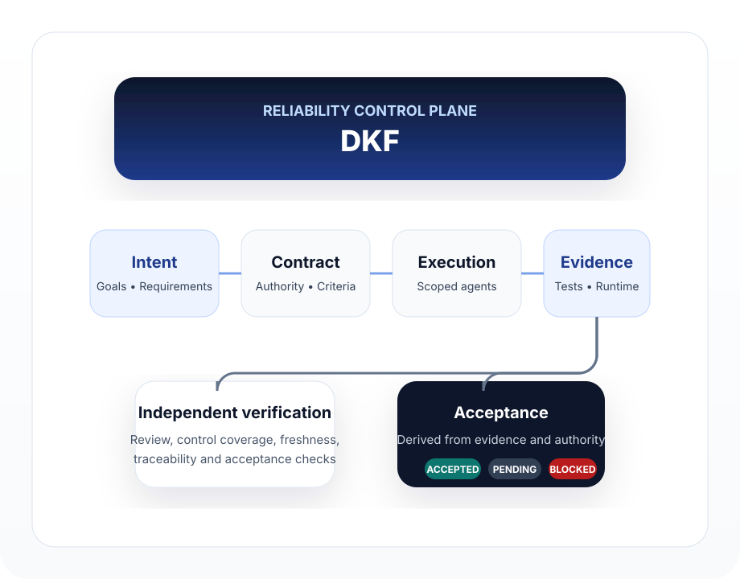
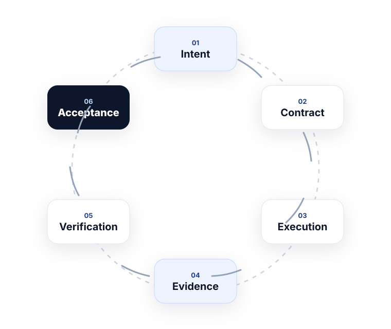

DKF is built for the harder engineering problem: whether autonomous software work should be trusted.
Open-source • Current release v0.10.0
AI can write it.
DKF proves it.
DKF is the reliability control plane for agentic software development. It binds autonomous work to explicit contracts, preserves provenance, isolates verification, and computes acceptance from evidence instead of trusting an agent’s claim that the job is done.
- Development Contracts and governed execution
- Independent verification and deterministic acceptance
- Authority Graph traceability and stale-source detection

v0.10.0 provides the current proven foundation. Roadmap items are clearly separated from implemented capability.
v0.11 introduces Adaptive Reliability so the required lifecycle is compiled from risk, scope and control policy.
Why DKF
Autonomous coding is improving fast. Trust is the remaining gap.
Typical agent workflow
- The agent plans the work.
- The agent implements the code.
- The agent reports that it is done.
That is useful, but it leaves major trust questions unresolved.
DKF workflow
- Intent is bound to a Development Contract.
- Execution happens inside governed constraints.
- Verification is kept independent.
- Acceptance is computed from evidence.
Completion becomes a computed state, not an agent assertion.
Were the right requirements actually implemented?
Did required design, security or architecture controls run?
Is the evidence still fresh after source or code changes?
Can every accepted change be traced back to authoritative intent?
How it works
The control plane sits between intent and acceptance.
DKF coordinates a governed flow so autonomous work stays authorized, traceable and verifiable.

Intent
User goals, requirements, decisions and authoritative sources are captured explicitly.
Contract
DKF binds the work to a Development Contract that defines what must be done and how it will be validated.
Execution
Implementation tasks run with controlled context, execution safeguards and scoped authority.
Evidence
Tests, runtime checks, reviews and control results become explicit evidence rather than informal narrative.
Verification
Independent verification checks that required criteria, controls and traceability are satisfied.
Acceptance
The Acceptance Engine derives ACCEPTED, PENDING or BLOCKED from evidence and authority state.
System view
From intent to impact. Reliably.
DKF governs the path from human intent to accepted software outcomes while keeping agents productive beneath the control plane.

Capabilities
What DKF provides today
These are current implemented capabilities reflected in the repository and v0.10 release baseline.
Development Contracts
Structured execution authority for tasks, requirements, controls and completion criteria.
Acceptance Engine
Determines whether a change is ACCEPTED, PENDING or BLOCKED from evidence and authority state.
Authority Graph
Links decisions, requirements, tasks, evidence and review to prevent orphaned or unverified changes.
Execution Safety
Guards consequential actions and preserves approval requirements for destructive or sensitive operations.
Independent Verification
Prevents implementation narrative from becoming the sole basis for completion or release confidence.
Design Authority
Establishes design governance so frontend work stays aligned with the authoritative design source.
Numbered Decisions
Commands start capabilities. Numbers control decisions. Bounded Product Owner input becomes structured runtime state.
Control Center foundation
A growing observability layer for lifecycle state, decisions, memory, governance and verification data.
Supported environments
Agent-independent by design
DKF is designed to work above the execution layer so it can guide and govern multiple agent environments.
AntigravityOpenCodeClaude CodeCursorCopilotClineWindsurf
Roadmap
From proven baseline to proven reliability
The roadmap is public and explicit. Planned items are not presented as already delivered.
Currentv0.10
Numbered decisions
Structured suggestion promotion and deterministic Product Owner decision handling.
Nextv0.11
Adaptive Reliability
Compile the minimum sufficient lifecycle and mandatory controls from risk, scope and policy.
Plannedv0.12
DKF Proof
Acceptance certificates and proof bundles for evidence-backed release confidence.
Plannedv0.13
Repository enforcement
GitHub PR and CI enforcement so DKF acceptance becomes a first-class repository gate.
Plannedv0.14+
Broader reliability runtime
Benchmarking, isolation, safe parallelism, multi-repository change contracts and stronger evidence intelligence.
Targetv1.0
Proven Reliability
DKF becomes the definitive reliability runtime for agentic software development.
Get started
Install DKF and start with governed agentic development.
Use the existing repository, documentation and release package as the source of truth.
npm install -g development-kit
npx development-kit@latest --global